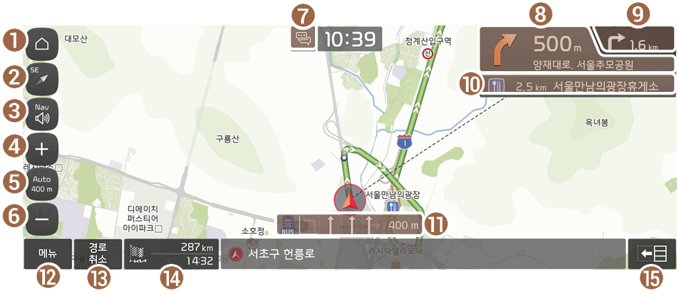
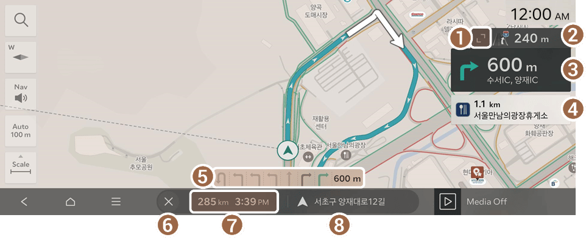
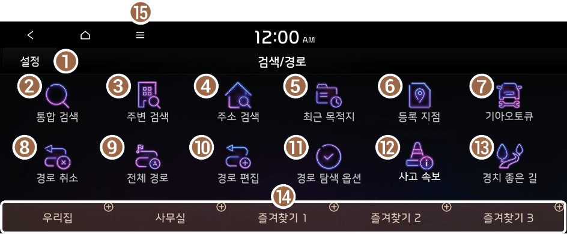
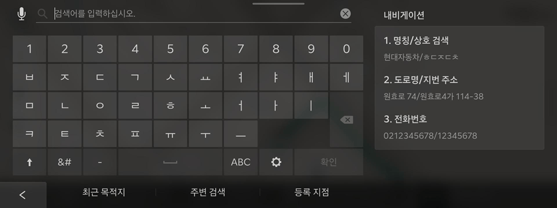
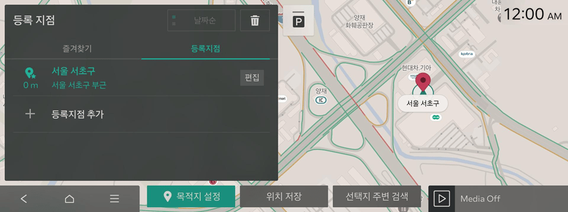
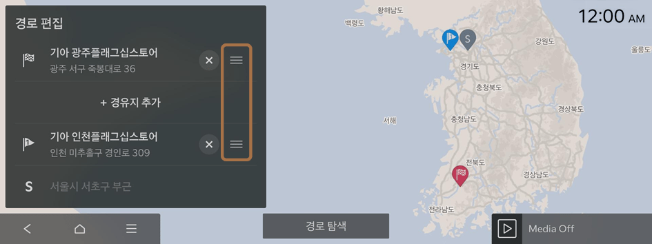

5W 순정 내비 vs ccNC 내비
기아 공식 한국어 매뉴얼 화면 이미지만 근거로 비교했다. 차량 실물 확인은 없다.
왼쪽이 5W(K8 Gen5W), 오른쪽이 ccNC. 아래 그림은 각 매뉴얼에서 받은 원본이다.
1. 지도 화면과 길안내
5W 길안내 D-navi_guidance_a.png

ccNC 길안내 D-map_guidance.png

5W는 안내 카드가 우상단 3장으로 쌓이고 시계가 상단 중앙에 있다. ccNC는 시계가 우상단이고,
지도 중앙 하단에 차선 안내 띠(605 m)가 따로 있다. 왼쪽 세로 버튼도 5W는 6개(홈·SE·Nav·＋·Auto·−),
ccNC는 5개(검색·나침반·Nav·Auto·Scale)다.
2. 하단 표시줄
5W 하단 줄 순정 내비 메뉴
하단 78 px 확대
메뉴 · 경로 종료 · 287 km/14:32 · ⓘ 목적지 · 오른쪽 끝 버튼
ccNC 하단 줄 시스템 표시줄
하단 78 px 확대
← 뒤로 · ⌂ 홈 · ≡ 메뉴 · 중앙 알약(거리·시간·목적지) · ▶ Media Off
여기가 가장 큰 차이다. 5W의 아래 줄은 내비 앱의 메뉴이고, ccNC의 아래 줄은 시스템 바다.
우리 테마가 만든 하단바는 ccNC 쪽 모양(assets/navbar.html)이라, 5W 내비 위에 얹으면
ccNC 스타일 바가 5W 스타일 메뉴줄 위에 놓인다.
3. 검색과 목적지
5W 검색/경로 D-navi_searchroute_main_a.png

ccNC 검색 D-map_route.png

5W는 검은 타일 메뉴(통합 검색·주변 검색·주소 검색·최근 목적지·등록 지점·기아오토라·경로 취소·경로 편집…)이고,
아래 탭에 우리집 · 사무실 · 즐겨찾기 1·2·3이 있다. ccNC는 검색창에 한글 자판이 나오고
오른쪽에 최근 검색 패널이 붙는다. 5W 쪽 우리집·사무실 탭은 '우리 집·회사 바로 안내' 만들 때 그대로 쓸 수 있다.
4. 등록 지점과 경로 편집
ccNC 등록 지점 D-map_place_main.png

ccNC 경로 편집 D-map_route_edit.png

ccNC는 등록 지점에서 '목적지 설정 · 위치 저장 · 선택지 주변 검색'을 준다. 5W 화면에는 이 버튼들이 없다.
5. 항목별 정리
| 항목 | 5W 순정 내비 | ccNC 내비 | 우리 쪽 의미 |
|---|
| 하단 줄 성격 | 내비 앱 메뉴(메뉴·경로 종료·거리·목적지) | 시스템 바(뒤로·홈·메뉴 + 중앙 알약 + 미디어) | 우리 하단바는 ccNC 쪽. 5W 위에서는 두 시스템이 나란히 보인다 |
| 왼쪽 세로 버튼 | 6개: 홈·SE·Nav·＋·Auto·− | 5개: 검색·나침반·Nav·Auto·Scale | 순정 내비 영역. 테마가 새로 만들 대상 아님 |
| 안내 카드 | 우상단 3장 | 우측 스택 + 지도 중앙 하단 차선 띠 | 테마에 넣으려면 데이터 경로가 아직 없다 |
| 시계 위치 | 상단 중앙 | 우상단 | 테마 상단 시계는 따로 둠 |
| 검색 UI | 검은 타일 메뉴 | 검색창 + 한글 자판 + 최근 검색 패널 | 테마 검색은 한글 통합 검색. 5W 타일 메뉴와는 다르다 |
| 우리 집·회사 | 검색 화면 탭에 우리집·사무실 있음 | '등록 지점' 개념으로만 있음 | 5W 탭을 여는 방식이 정공법에 가깝다 |
| 분할 화면 | 내비 안에서 우측 패널(안내 카드 + 확대 지도) | 시스템 위젯으로 우측 영역 | 홈 오른쪽 위젯은 별개 과제 |
| 지도 색 | 연두 배경 + 초록 경로 | 회록 도로 + 촘촘한 POI | 테마 지도는 예시 데이터 |
근거: 5W 공식 매뉴얼 006_Navigation_basic.html
근거: ccNC 공식 매뉴얼 Map.html · Map_search.html · Map_editroute.html
차량 실물 확인 전